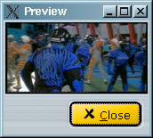
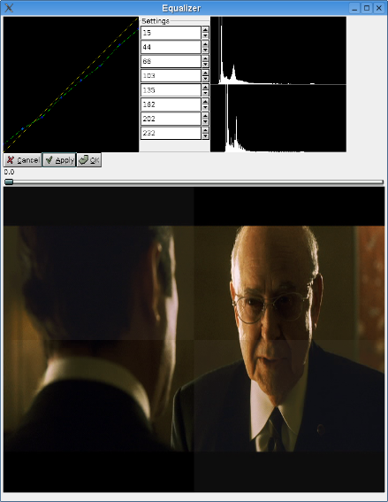
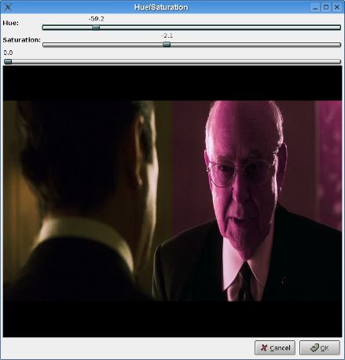

|
Video: Luma and Chroma 1.Foreword This filter family alters chroma and or luma. 2.Luma/Chroma filters Sometimes there is a visible inversion on chroma planes (some broken video capture cards do that). This filters swap them back. For example, this image has swapped u/v :  After applying swap u/v, you end up with that one, which is correct :
This filter linearily adjusts contrast/brightness on luma and or chroma u/v. It can help on too bright/too dark/too red/too blue video.
This filter can tweak the luma distribution on an image. It is usually to correct white not really white, black not really black effect.  The upper white drawing is the original luma, the lower one is the modified luma. The displayed image is made of four square : original modified then modified original. These filters are for debug. They let only one component (luma/u/v). This is a port of MPlayer hue filter. You can alter hue and saturatio. . The left part of the image is left unchanged, the right part has its hue/saturation changed.  This is a port of MPlayer equalizer filter, still under construction . |